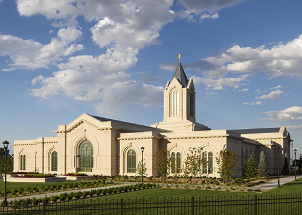
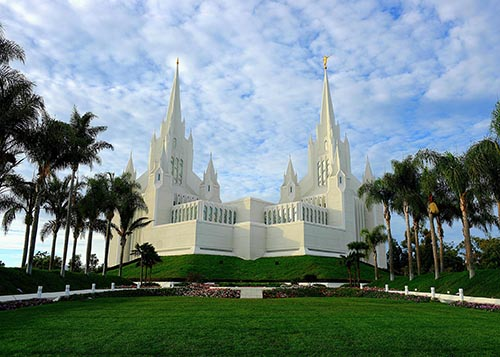
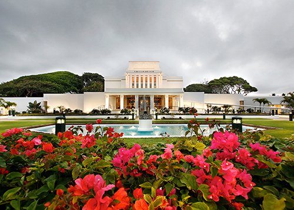
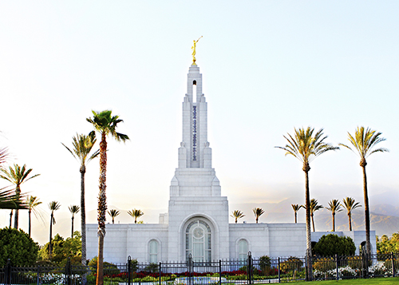

Temple
Fort Collins Colorado Temple
Address:
2180 Magestic Dr.
Fort Collins, CO 80528
United States
Telephone:
(1) 970-797-4630
Email:
fortcollinscoloradotemple@ldsmail.com
Services Available:
- no services available
History:
- Announced: 2 April 2011
- Ground Breaking: 24 August 2013
- Dedicated: 16 October 2016
Ordinance schedule:
To schedule living ordinances (such as own endowment or sealing) or group visits, please call: (1) 970-797-4630
Endownment Session schedule: Saturday, 27 July 2019
- 7:00 AM : Walk-ins and Appointments
- "8:30 AM : Walk-ins and Appointments
- 10:00 AM : Walk-ins and Appointments
- 11:30 AM : Walk-ins and Appointments
- 1:00 PM : Walk-ins and Appointments
- 3:00 PM : Walk-ins and Appointments - Spanish
Weather Summary
Currently: Sunny
High: 76 °F
Wind Chill: windchill °F
Humidity: 69%
Wind Speed: 45 mph
San Diego California Temple
Address:
7474 Charmant Dr.
San Diego CA 92122-5000
United States
Telephone:
(1) 858-622-0991
Email:
sandiegocaliforniatemple@ldsmail.com
Services Available:
- Clothing Rental
- Cafeteria
- Distribution Center Nearby
History:
- Announced: 7 April 1984
- Ground Breaking: 27 February 1988
- Dedicated: 25 April 1993
Ordinance schedule: To schedule living ordinances (such as own endowment or sealing) or group visits, please call: (1) 858-622-0991
Session schedule: Saturday, 27 July 2019
- 7:30 AM : Walk-ins Only
- 8:00 AM : Walk-ins and Appointments
- 8:30 AM : Walk-ins and Appointments
- 9:00 AM : Walk-ins and Appointments - Spanish
- 9:30 AM : Walk-ins Only
- 10:30 AM : Walk-ins and Appointments
- 11:00 AM : Walk-ins and Appointments
- 11:30 AM : Walk-ins and Appointments - Spanish
- 12:30 PM : Walk-ins Only
- 1:00 PM : Walk-ins and Appointments
- 2:00 PM : Walk-ins and Appointments
- 3:00 PM : Walk-ins and Appointments
- 4:00 PM : Walk-ins and Appointments
- 5:00 PM : Walk-ins and Appointments
- 6:00 PM : Walk-ins and Appointments
- 6:30 PM : Walk-ins and Appointments
- 7:00 PM : Walk-ins and Appointments
temple closures JSON
Weather Summary
Currently: Sunny
High: 76 °F
Wind Chill: windchill °F
Humidity: 69%
Wind Speed: 45 mph
Laie Hawaii Temple
Address:
55-600 Naniloa Loop
Laie, HI 96762-22
United States
Telephone:
(1) 808-293-2427
Email:
laiehawaiitemple@ldsmail.com
Services Available:
- Clothing Rental
- Cafeteria
- Distribution Center Nearby
History:
- Announced: 3 October 1915
- Ground Breaking: 8 February 1916
- Dedicated: 27 November 1919
- Rededicated: 13 June 1978
- Rededicated: 21 November 2010
Ordinance schedule:
To schedule living ordinances (such as own endowment or sealing) or group visits, please call: (1) 808-293-2427
Endownment Session schedule: Saturday, 27 July 2019
- 6:00 AM : Walk-ins Only - English
- 7:00 AM : Walk-ins and Appointments - English
- 8:00 AM : Walk-ins and Appointments - English
- 9:00 AM : Walk-ins and Appointments - English
- 10:0 AM : Walk-ins Only - English
- 11:00 AM : Walk-ins and Appointments - English
- 12:00 PM : Walk-ins and Appointments - English
- 1:00 PM : Walk-ins Only - English
temple closures JSON
Weather Summary
Currently: Sunny
High: 76 °F
Wind Chill: windchill °F
Humidity: 69%
Wind Speed: 45 mph
Redlands California Temple
Address:
1761 Fifth Ave.
Redlands, CA 92374-5503
United States
Telephone:
(1) 909-389-7369
Email:
redlandscaliforniatemple@ldsmail.com
Services Available:
- distribution center nearby
History:
- Announced: 21 April 2001
- Ground Breaking: 1 December 2001
- Dedicated: 14 September 2003
Ordinance schedule: To schedule living ordinances (such as own endowment or sealing) or group visits, please call: (1) 909-389-7369
Session schedule:
- 7:00 AM : Appointments Only - ASL
- 8:30 AM : Appointments Only
- 10:00 AM : Appointments Only
- 12:00 PM : Appointments Only
- 1:30 PM : Appointments Only
- 3:30 PM : Appointments Only - Spanish
- 5:00 PM : Appointments Only - Spanish
- 6:30 PM : Appointments Only - Spanish
temple closures JSON
Weather Summary
Currently: Sunny
High: 76 °F
Wind Chill: windchill °F
Humidity: 69%
Wind Speed: 45 mph